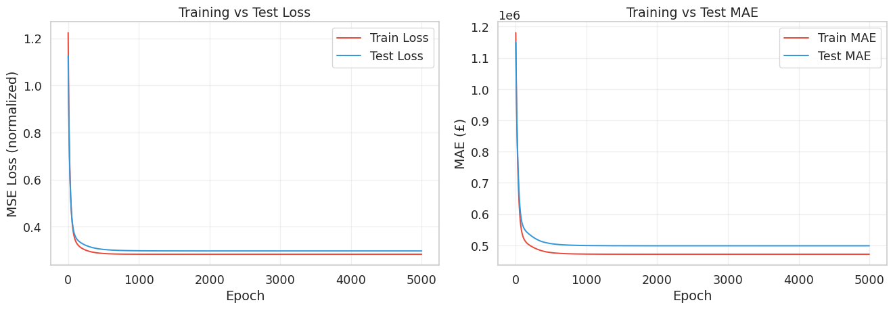
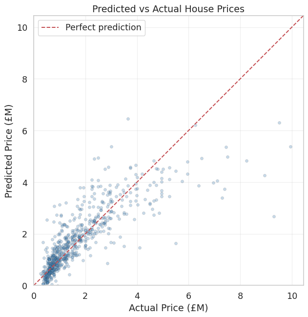

import numpy as np
import matplotlib.pyplot as plt
import seaborn as sns
sns.set_theme(style='whitegrid', font_scale=1.2)Lab3-1. Linear Regression from Scratch

Objectives
- Understand how modular layer classes (Linear, Identity) serve as reusable building blocks for different model architectures.
- Implement Linear Regression from scratch as a single-layer neural network using the same
Linear,Identity,MSELoss, andOptimizerclasses introduced in the lecture. - Build a clean
LinearRegressionclass withfit()andpredict()methods that directly orchestrates the forward pass, backward pass, and weight updates. - Visualize training dynamics (loss curves, MAE curves) and evaluate model performance on unseen test data.
0. Setup
1. Preparing the Dataset
We load the London houses dataset, which contains 87 features (area, number of bedrooms, property type dummies, postcode dummies, etc.) and a target column price. The preparation follows the same four steps from the lecture: separate features from target, split into train/test, normalize, and confirm the shapes.
from sklearn.model_selection import train_test_split
# Load data
data = np.genfromtxt("../../data/london_houses_transformed.csv", delimiter=",", skip_header=1)
X = data[:, :-1] # All columns except the last one (features)
Y = data[:, -1:] # Last column only (target: price)
print(f"Feature matrix X shape: {X.shape}")
print(f"Target vector Y shape: {Y.shape}")Feature matrix X shape: (3441, 87)
Target vector Y shape: (3441, 1)The feature matrix has 3441 samples and 87 features. Each row represents one property listing, and the last column (price) is what we want to predict.
# Train / Test split (80/20)
X_train_raw, X_test_raw, Y_train_raw, Y_test_raw = train_test_split(
X, Y, test_size=0.2, random_state=15
)
# Normalize features (fit on training data only to avoid data leakage)
X_mean, X_std = X_train_raw.mean(axis=0), X_train_raw.std(axis=0) + 1e-8
X_train = (X_train_raw - X_mean) / X_std
X_test = (X_test_raw - X_mean) / X_std
# Normalize target
Y_mean, Y_std = Y_train_raw.mean(), Y_train_raw.std()
Y_train = (Y_train_raw - Y_mean) / Y_std
Y_test = (Y_test_raw - Y_mean) / Y_std
N, D = X_train.shape
print(f"Dataset: {X.shape[0]} total samples")
print(f" Train: {N} | Test: {X_test.shape[0]}")
print(f" Features (D): {D}")Dataset: 3441 total samples
Train: 2752 | Test: 689
Features (D): 87
WarningWhy Normalize Using Only Training Statistics?
We compute the mean and standard deviation from the training set and apply them to both the training and test sets. If we computed statistics on the entire dataset (including the test set), the model would indirectly “see” information from the test set during training. This is called data leakage and leads to overly optimistic evaluation metrics that do not reflect real-world performance.
2. Defining the Layer Building Blocks
These are the same modular layer classes from the lecture. Each class implements a forward() method that computes the output and caches values needed for backpropagation, and a backward() method that receives the upstream gradient and returns the downstream gradient.
2.1 Linear Layer
Forward:
\[z = \mathbf{x}\mathbf{W}^\top + b\]
Backward (given upstream gradient \(\texttt{grad} = \partial \mathcal{L} / \partial z\)):
\[\frac{\partial z}{\partial \mathbf{W}} = \mathbf{x}, \quad \frac{\partial z}{\partial b} = 1, \quad \frac{\partial z}{\partial \mathbf{x}} = \mathbf{W}\]
\[\Longrightarrow \qquad \frac{\partial \mathcal{L}}{\partial \mathbf{W}} = (\underbrace{\frac{\partial \mathcal{L}}{\partial z}}_{\texttt{grad}})^{\top} \!\cdot\; \underbrace{\frac{\partial z}{\partial \mathbf{W}}}_{\mathbf{x}} = \texttt{grad}^\top \mathbf{x}, \qquad \frac{\partial \mathcal{L}}{\partial b} = \sum_i \texttt{grad}_i, \qquad \frac{\partial \mathcal{L}}{\partial \mathbf{x}} = \underbrace{\frac{\partial \mathcal{L}}{\partial z}}_{\texttt{grad}} \!\cdot\; \underbrace{\frac{\partial z}{\partial \mathbf{x}}}_{\mathbf{W}} = \texttt{grad}\;\mathbf{W}\]
class Linear:
def __init__(self, in_dims, out_dims):
# Xavier uniform initialization for stable gradients
bound = 1 / np.sqrt(in_dims)
self.W = np.random.uniform(-bound, bound, size=(out_dims, in_dims))
self.b = np.random.uniform(-bound, bound, size=(out_dims,))
def forward(self, x):
self.x = x # Cache input for backward pass
return x @ self.W.T + self.b # z = X W^T + b
def backward(self, grad):
self.deltaW = grad.T @ self.x # dL/dW = g^T @ x
self.deltab = grad.sum(axis=0) # dL/db = sum of upstream gradients
return grad @ self.W # dL/dX = g @ W (downstream gradient)
TipLayer Verification
# Quick sanity check: create a Linear layer mapping 3 features to 1 output
np.random.seed(0)
test_layer = Linear(in_dims=3, out_dims=1)
test_input = np.array([[1.0, 2.0, 3.0],
[4.0, 5.0, 6.0]]) # (2 samples, 3 features)
test_output = test_layer.forward(test_input)
print(f"Input shape : {test_input.shape}")
print(f"Weight shape: {test_layer.W.shape}")
print(f"Bias shape : {test_layer.b.shape}")
print(f"Output shape: {test_output.shape}")Input shape : (2, 3)
Weight shape: (1, 3)
Bias shape : (1,)
Output shape: (2, 1)The shapes confirm that our Linear(3, 1) layer correctly maps 2 samples of 3 features each to 2 samples of 1 output each.
2.2 Identity Layer
Forward:
\[h(z) = z\]
Backward (given upstream gradient \(\texttt{grad}\)):
\[\frac{\partial h}{\partial z} = 1 \qquad \Longrightarrow \qquad \frac{\partial \mathcal{L}}{\partial z} = \underbrace{\frac{\partial \mathcal{L}}{\partial h}}_{\texttt{grad}} \cdot \frac{\partial h}{\partial z} = \texttt{grad} \cdot 1 = \texttt{grad}\]
class Identity:
def forward(self, x):
return x
def backward(self, grad):
return grad
TipLayer Verification
# Verify that Identity passes values through unchanged
test_identity = Identity()
test_z = np.array([[1.5, -2.0, 0.3]])
out = test_identity.forward(test_z)
print(f"Input : {test_z}")
print(f"Output: {out}")Input : [[ 1.5 -2. 0.3]]
Output: [[ 1.5 -2. 0.3]]Both forward and backward pass the values through unchanged, confirming that Identity acts as a no-op activation.
3. Defining the MSE Loss
Forward:
\[\mathcal{L}_{\text{MSE}} = \frac{1}{N}\sum_{i=1}^{N}(\hat{y}_i - y_i)^2\]
Backward (gradient with respect to predictions):
\[\frac{\partial \mathcal{L}}{\partial \hat{y}_i} = \frac{2}{N}(\hat{y}_i - y_i)\]
class MSELoss:
def forward(self, pred, true):
self.pred = pred
self.true = true
self.N = pred.shape[0]
return ((pred - true) ** 2).mean()
def backward(self):
return (2 / self.N) * (self.pred - self.true)
def __call__(self, pred, true):
return self.forward(pred, true)4. Building the Linear Regression Model
Now we assemble everything into a LinearRegression class with fit() and predict() methods. Unlike the MLP from the lecture, which used a generic container to chain an arbitrary list of blocks, linear regression needs only two layers: a single Linear layer and an Identity output activation. We manage these directly as instance attributes, which keeps the data flow explicit and easy to follow.
class LinearRegression:
def __init__(self, input_dim, lr=0.01):
"""
Parameters
----------
input_dim : int
Number of input features (D).
lr : float
Learning rate for gradient descent.
"""
self.linear = Linear(input_dim, 1)
self.identity = Identity()
self.loss_func = MSELoss()
self.lr = lr
def predict(self, X):
"""Forward pass: Linear -> Identity."""
z = self.linear.forward(X)
return self.identity.forward(z)
def _update(self):
"""Apply gradient descent to the Linear layer's parameters."""
self.linear.W = self.linear.W - self.lr * self.linear.deltaW
self.linear.b = self.linear.b - self.lr * self.linear.deltab
def fit(self, X_train, Y_train, X_test, Y_test,
Y_mean, Y_std, epochs=5000, print_every=500):
"""
Train the model using full-batch gradient descent.
Parameters
----------
X_train, Y_train : ndarray
Normalized training data.
X_test, Y_test : ndarray
Normalized test data (for monitoring only, not used for training).
Y_mean, Y_std : float
Statistics to convert MAE back to original price scale.
epochs : int
Number of training iterations.
print_every : int
Print progress every this many epochs.
Returns
-------
history : dict
Training and test loss/MAE recorded at every epoch.
"""
history = {
"train_loss": [], "test_loss": [],
"train_mae": [], "test_mae": []
}
for epoch in range(epochs):
# --- Forward pass ---
prediction = self.predict(X_train)
loss = self.loss_func(prediction, Y_train)
# --- Backward pass (Identity then Linear) ---
grad = self.loss_func.backward()
grad = self.identity.backward(grad)
self.linear.backward(grad)
# --- Update weights ---
self._update()
# --- Record training metrics ---
history["train_loss"].append(loss)
train_mae = np.abs(
prediction * Y_std + Y_mean - (Y_train * Y_std + Y_mean)
).mean()
history["train_mae"].append(train_mae)
# --- Evaluate on test set (no gradient computation) ---
test_pred = self.predict(X_test)
test_loss = ((test_pred - Y_test) ** 2).mean()
test_mae = np.abs(
test_pred * Y_std + Y_mean - (Y_test * Y_std + Y_mean)
).mean()
history["test_loss"].append(test_loss)
history["test_mae"].append(test_mae)
# --- Print progress ---
if epoch % print_every == 0 or epoch == epochs - 1:
print(f" Epoch {epoch:4d} | "
f"Train Loss: {loss:.6f} | Test Loss: {test_loss:.6f}")
return historyThe fit() method follows the same three-step loop you saw in the lecture: forward, backward, update. The only addition is that we also evaluate on the test set at each epoch to monitor generalization. Note that the test set is never used to compute gradients or update weights.
5. Training the Model
5.1 Running the Training Loop
np.random.seed(42)
reg = LinearRegression(input_dim=D, lr=0.01)
history = reg.fit(
X_train, Y_train,
X_test, Y_test,
Y_mean, Y_std,
epochs=5000,
print_every=500
) Epoch 0 | Train Loss: 1.223665 | Test Loss: 1.125681
Epoch 500 | Train Loss: 0.286441 | Test Loss: 0.303669
Epoch 1000 | Train Loss: 0.283401 | Test Loss: 0.297997
Epoch 1500 | Train Loss: 0.283299 | Test Loss: 0.297369
Epoch 2000 | Train Loss: 0.283295 | Test Loss: 0.297268
Epoch 2500 | Train Loss: 0.283295 | Test Loss: 0.297250
Epoch 3000 | Train Loss: 0.283295 | Test Loss: 0.297246
Epoch 3500 | Train Loss: 0.283295 | Test Loss: 0.297246
Epoch 4000 | Train Loss: 0.283295 | Test Loss: 0.297246
Epoch 4500 | Train Loss: 0.283295 | Test Loss: 0.297246
Epoch 4999 | Train Loss: 0.283295 | Test Loss: 0.297246You should see both train and test loss decrease steadily. If the loss increases or produces nan, the learning rate is too large.
5.2 Visualizing the Training Curves
fig, (ax1, ax2) = plt.subplots(1, 2, figsize=(14, 5))
# Left panel: MSE Loss
ax1.plot(history["train_loss"], label="Train Loss", color="#e74c3c", linewidth=1.5)
ax1.plot(history["test_loss"], label="Test Loss", color="#3498db", linewidth=1.5)
ax1.set_xlabel("Epoch")
ax1.set_ylabel("MSE Loss (normalized)")
ax1.set_title("Training vs Test Loss")
ax1.legend()
ax1.grid(True, alpha=0.3)
# Right panel: MAE in original price scale
ax2.plot(history["train_mae"], label="Train MAE", color="#e74c3c", linewidth=1.5)
ax2.plot(history["test_mae"], label="Test MAE", color="#3498db", linewidth=1.5)
ax2.set_xlabel("Epoch")
ax2.set_ylabel("MAE (£)")
ax2.set_title("Training vs Test MAE")
ax2.legend()
ax2.grid(True, alpha=0.3)
plt.tight_layout()
plt.show()
The left plot shows the normalized MSE loss, which is useful for diagnosing training dynamics (is it converging? is it overfitting?). The right plot shows the Mean Absolute Error in pounds, which is more interpretable: it tells you, on average, how far off the model’s price predictions are.
For linear regression, you should see the train and test curves staying very close together. If the test loss diverged upward while the train loss continued to drop, that would signal overfitting, but a linear model with 87 features and 2752 training samples has relatively little capacity to overfit.
6. Evaluation on Unseen Test Data
# Generate predictions on the test set
Y_pred_norm = reg.predict(X_test)
# Denormalize back to original price scale
Y_pred = Y_pred_norm * Y_std + Y_mean
Y_real = Y_test * Y_std + Y_mean
# Compute final MAE
mae = np.abs(Y_pred - Y_real).mean()
print(f"TEST PREDICTIONS (UNSEEN DATA):")
print(f" MAE: £{mae:,.0f}")TEST PREDICTIONS (UNSEEN DATA):
MAE: £498,674This MAE tells you the average absolute prediction error in pounds. For London house prices ranging from under £1M to nearly £10M, an MAE around £500K-£600K is a reasonable starting point for a purely linear model with no feature engineering.
6.1 Predicted vs Actual Scatter Plot
A scatter plot of predicted versus actual prices is one of the most informative diagnostic visualizations for regression. Points on the diagonal line \(\hat{y} = y\) represent perfect predictions.
fig, ax = plt.subplots(figsize=(7, 7))
ax.scatter(Y_real / 1e6, Y_pred / 1e6, alpha=0.3, color='steelblue',
edgecolors='k', linewidths=0.3, s=20)
# Plot the perfect prediction line
lims = [0, Y_real.max() / 1e6 * 1.05]
ax.plot(lims, lims, 'r--', linewidth=1.5, label='Perfect prediction')
ax.set_xlabel("Actual Price (£M)")
ax.set_ylabel("Predicted Price (£M)")
ax.set_title("Predicted vs Actual House Prices")
ax.legend()
ax.set_xlim(lims)
ax.set_ylim(lims)
ax.set_aspect('equal')
ax.grid(True, alpha=0.3)
plt.tight_layout()
plt.show()
If the model were perfect, all points would lie on the red dashed line. Systematic deviations (e.g., consistently under-predicting expensive houses) reveal limitations of the linear assumption and suggest where a more complex model like the MLP from the lecture might help.
7. Comparing with the Closed-Form Solution
Linear regression has an exact solution via the Normal Equation:
\[\hat{\mathbf{w}} = (\mathbf{X}^\top \mathbf{X})^{-1} \mathbf{X}^\top \mathbf{Y}\]
This provides a useful reference point: if our gradient descent implementation is correct, the learned weights should be close to the closed-form solution.
# Prepend a column of ones for the bias term
X_train_aug = np.hstack([np.ones((N, 1)), X_train])
X_test_aug = np.hstack([np.ones((X_test.shape[0], 1)), X_test])
# Closed-form solution: w = (X^T X)^{-1} X^T Y
w_closed = np.linalg.solve(X_train_aug.T @ X_train_aug,
X_train_aug.T @ Y_train)
# Evaluate the closed-form model on the test set
Y_pred_closed_norm = X_test_aug @ w_closed
Y_pred_closed = Y_pred_closed_norm * Y_std + Y_mean
mae_closed = np.abs(Y_pred_closed - Y_real).mean()
print(f"Gradient Descent MAE : £{mae:,.0f}")
print(f"Closed-Form MAE : £{mae_closed:,.0f}")Gradient Descent MAE : £498,674
Closed-Form MAE : £498,674
NoteWhy Use Gradient Descent If a Closed Form Exists?
For this dataset with 87 features, the Normal Equation is fast and exact. But the closed-form solution requires inverting a \(D \times D\) matrix, which costs \(O(D^3)\). When \(D\) reaches tens of thousands (e.g., NLP or image tasks), this inversion becomes infeasible. Gradient descent scales linearly with \(D\) and generalizes naturally to nonlinear models (like the MLP from the lecture) where no closed-form solution exists. Practicing gradient descent on linear regression builds the foundation for everything that follows.
If the two MAE values are close, your gradient descent implementation is working correctly. A small gap can remain if gradient descent has not fully converged. You can try increasing epochs or tuning lr to close the gap further.
8. Complete Code
import numpy as np
from sklearn.model_selection import train_test_split
# ============================================================
# 1. Data Preparation
# ============================================================
data = np.genfromtxt("../../data/london_houses_transformed.csv", delimiter=",", skip_header=1)
X = data[:, :-1]
Y = data[:, -1:]
X_train_raw, X_test_raw, Y_train_raw, Y_test_raw = train_test_split(
X, Y, test_size=0.2, random_state=15
)
X_mean, X_std = X_train_raw.mean(axis=0), X_train_raw.std(axis=0) + 1e-8
X_train = (X_train_raw - X_mean) / X_std
X_test = (X_test_raw - X_mean) / X_std
Y_mean, Y_std = Y_train_raw.mean(), Y_train_raw.std()
Y_train = (Y_train_raw - Y_mean) / Y_std
Y_test = (Y_test_raw - Y_mean) / Y_std
N, D = X_train.shape
# ============================================================
# 2. Building Blocks
# ============================================================
class Linear:
def __init__(self, in_dims, out_dims):
bound = 1 / np.sqrt(in_dims)
self.W = np.random.uniform(-bound, bound, size=(out_dims, in_dims))
self.b = np.random.uniform(-bound, bound, size=(out_dims,))
def forward(self, x):
self.x = x
return x @ self.W.T + self.b
def backward(self, grad):
self.deltaW = grad.T @ self.x
self.deltab = grad.sum(axis=0)
return grad @ self.W
class Identity:
def forward(self, x):
return x
def backward(self, grad):
return grad
class MSELoss:
def forward(self, pred, true):
self.pred = pred
self.true = true
self.N = pred.shape[0]
return ((pred - true) ** 2).mean()
def backward(self):
return (2 / self.N) * (self.pred - self.true)
def __call__(self, pred, true):
return self.forward(pred, true)
# ============================================================
# 3. Linear Regression Model
# ============================================================
class LinearRegression:
def __init__(self, input_dim, lr=0.01):
self.linear = Linear(input_dim, 1)
self.identity = Identity()
self.loss_func = MSELoss()
self.lr = lr
def predict(self, X):
z = self.linear.forward(X)
return self.identity.forward(z)
def _update(self):
self.linear.W -= self.lr * self.linear.deltaW
self.linear.b -= self.lr * self.linear.deltab
def fit(self, X_train, Y_train, X_test, Y_test,
Y_mean, Y_std, epochs=5000, print_every=500):
history = {
"train_loss": [], "test_loss": [],
"train_mae": [], "test_mae": []
}
for epoch in range(epochs):
prediction = self.predict(X_train)
loss = self.loss_func(prediction, Y_train)
grad = self.loss_func.backward()
grad = self.identity.backward(grad)
self.linear.backward(grad)
self._update()
history["train_loss"].append(loss)
train_mae = np.abs(
prediction * Y_std + Y_mean - (Y_train * Y_std + Y_mean)
).mean()
history["train_mae"].append(train_mae)
test_pred = self.predict(X_test)
test_loss = ((test_pred - Y_test) ** 2).mean()
test_mae = np.abs(
test_pred * Y_std + Y_mean - (Y_test * Y_std + Y_mean)
).mean()
history["test_loss"].append(test_loss)
history["test_mae"].append(test_mae)
if epoch % print_every == 0 or epoch == epochs - 1:
print(f" Epoch {epoch:4d} | "
f"Train Loss: {loss:.6f} | Test Loss: {test_loss:.6f}")
return history
# ============================================================
# 4. Train & Evaluate
# ============================================================
np.random.seed(42)
reg = LinearRegression(input_dim=D, lr=0.01)
history = reg.fit(X_train, Y_train, X_test, Y_test, Y_mean, Y_std,
epochs=5000, print_every=500)
Y_pred_norm = reg.predict(X_test)
Y_pred = Y_pred_norm * Y_std + Y_mean
Y_real = Y_test * Y_std + Y_mean
mae = np.abs(Y_pred - Y_real).mean()
print(f"\nTEST RESULTS:")
print(f" MAE: £{mae:,.0f}") Epoch 0 | Train Loss: 1.223665 | Test Loss: 1.125681
Epoch 500 | Train Loss: 0.286441 | Test Loss: 0.303669
Epoch 1000 | Train Loss: 0.283401 | Test Loss: 0.297997
Epoch 1500 | Train Loss: 0.283299 | Test Loss: 0.297369
Epoch 2000 | Train Loss: 0.283295 | Test Loss: 0.297268
Epoch 2500 | Train Loss: 0.283295 | Test Loss: 0.297250
Epoch 3000 | Train Loss: 0.283295 | Test Loss: 0.297246
Epoch 3500 | Train Loss: 0.283295 | Test Loss: 0.297246
Epoch 4000 | Train Loss: 0.283295 | Test Loss: 0.297246
Epoch 4500 | Train Loss: 0.283295 | Test Loss: 0.297246
Epoch 4999 | Train Loss: 0.283295 | Test Loss: 0.297246
TEST RESULTS:
MAE: £498,674Summary
- Modular building blocks (
Linear,Identity,MSELoss) can be composed to build models of varying complexity. Linear Regression uses a singleLinear(D, 1)followed byIdentity, while the MLP from the lecture stacks multipleLinearandSigmoidlayers. - The training loop always follows the same three steps: forward pass (compute predictions), backward pass (propagate gradients), and parameter update (gradient descent). This pattern is identical whether the model is a simple linear regression or a deep neural network.
- The
fit()andpredict()interface provides a clean separation between training and inference. Duringfit(), gradients are computed and weights are updated. Duringpredict(), only the forward pass runs. - Linear regression serves as a useful baseline. Comparing its MAE (~£500K-£600K) with the MLP’s MAE (~£480K) from the lecture shows how much improvement nonlinear hidden layers provide on this dataset.
References
- Bishop, C. M. (2006). Pattern Recognition and Machine Learning. Springer.
- Goodfellow, I., Bengio, Y., and Courville, A. (2016). Deep Learning. MIT Press.